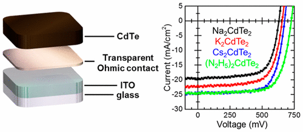

Improving charge transfer in CdTe solar cells
Transparent Ohmic contacts were deposited onto the CdTe absorber layer to enhance hole-extraction at the ITO/CdTe interface.

Tracking oxidation of selenolate and tellurolate ligands on noble-metal nanoparticles
Selenolate and tellurolate ligands could expand our ability to tune the properties of metal nanoparticles, but their stability when bound is unknown. I have been studying how the surface of these novel nanoparticles evolves under ambient conditions following their synthesis.

Probing asymmetries in the electronic properties of small noble-metal nanoparticles
Particles less than 5nm in size are assumed to be "spheroidal," but small differences in morphology can have a great impact on their effectiveness in catalysis and other applications. I have worked to demonstrate how electron spin resonance is a useful tool for exploring this asymmetry.